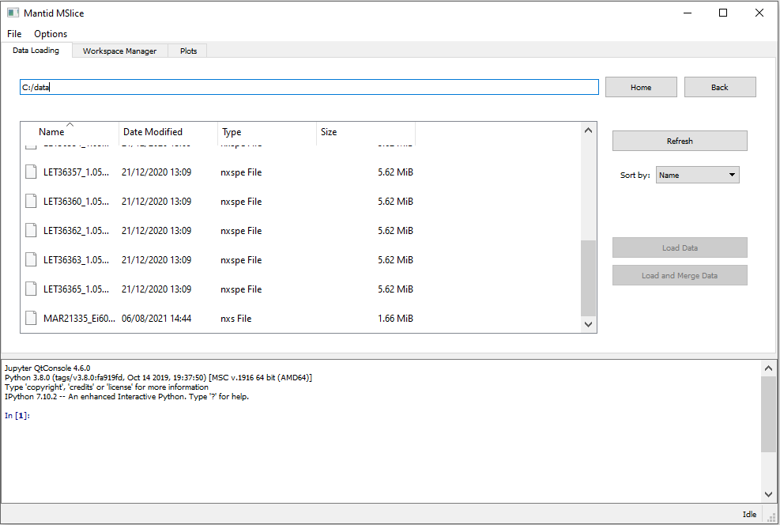
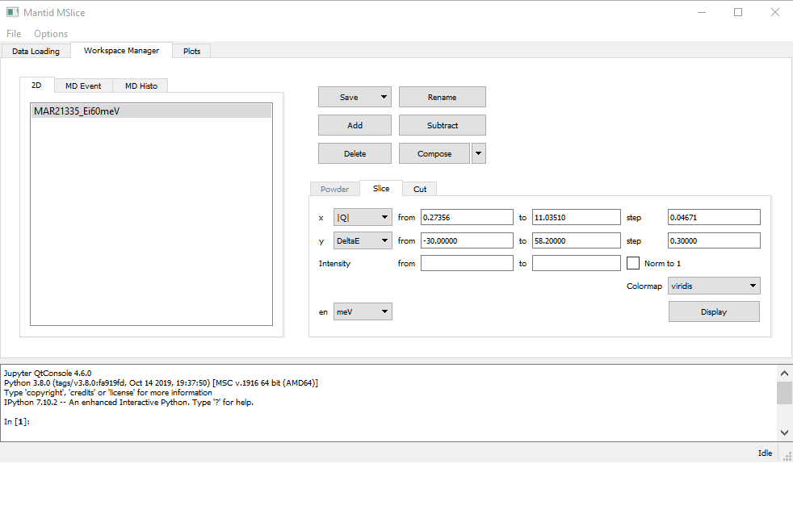
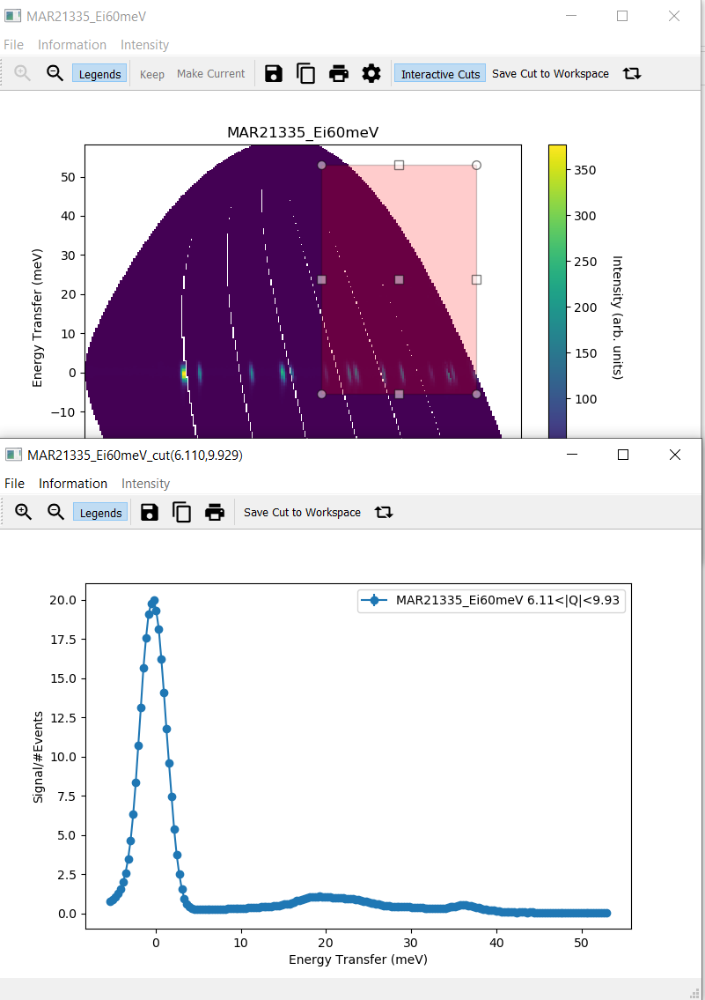
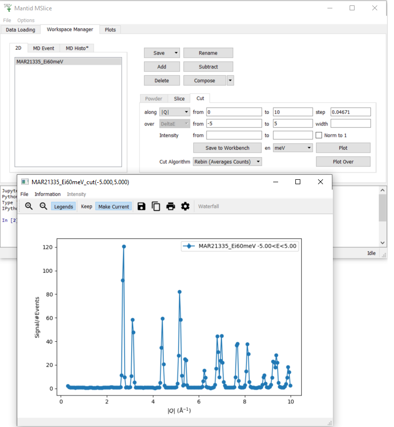

1. Quick Start¶
1.1. Starting MSlice¶
MSlice is included in the Mantid distribution so the easiest way to start it is from the Interfaces menu in MantidWorkbench.
The version of MSlice distributed with Mantid is the last stable version. However, there is currently quite rapid ongoing
development to the program, which is available only in the development version on GitHub. To get this version, please
download this zip and extract it to a folder on your computer.
You can then either copy the mslice subfolder (the folder containing a file called __init__.py) to the
scripts/ExternalInterfaces/ folder of Mantid, which will make the new version accessible from MantidWorkbench, or run the
mslicedevel.bat (or mslicedevel.sh for Linux) script to start MSlice. You may have to edit the file first if
you did not install Mantid in the default location.
1.2. Loading Data¶
{kind=link}
The GUI is divided into three main tabs, a Data Loading tab which shows the filesystem and allows the user to load reduced
data files, a Workspace Manager which handles the loaded data, and a Plots tab which provides an easy way to interact with
all currently open plots. To reach a particular data folder you can either
type the full path to the folder in the edit box, or navigate using the filesystem tree below using either the mouse or
keyboard arrow keys and the Enter key, with Backspace used for going up a folder level. Typing the first few letters
of a file or folder name will also jump to its location in the tree.
The filesystem tree only shows files which MSlice can load (currently nxs, nxspe and txt or xye files).
Double clicking on a file or pressing Enter when it is selected will load it. You can select multiple files by holding
down the Shift key to select a range or the Ctrl key to select individual files. These files may then be loaded
separately using the Load Data button or summed together into a single workspace using the Load and Merge Data
button. In the later case, the logs of the datafiles are also combined. (Note that you can also sum loaded workspaces
together in the Workspace Manager tab after loading, but in this case the logs are not combined).
1.3. PSD and non-PSD modes¶
Once the data has been loaded, the GUI will switch to the Workspace Manager tab and select the loaded workspace(s).
MSlice has two operating modes which it selects automatically depending on the type of data which is loaded. For data from
spectrometers with position-sensitive detectors which have been reduced preserving the pixel data (for example, autoreduced
data from SNS or one2one mapped data from ISIS), then the PSD mode is used. For these types of data, an extra step
to Calculate Projection is required before the data can be plotted. This step converts the data into an MD (multi-
dimensional) workspace and then uses the fast binning algorithms for these workspace types which Mantid provides. This
step will also be needed for single-crystal data which will be supported in future.
If you have loaded a PSD type dataset, the Slice and Cut tabs will be disabled, and instead a Powder tab
will be enabled. Please chose the axes you want to plot (either Momentum Transfer - Energy Transfer, or Scattering
Angle - Energy Transfer) and click Calculate Projection. This will create another workspace in the MD Event
tab. Selecting it will enable the Slice and Cut tabs to allow you to plot a 2D slice or 1D cut.
On the other hand, if you have loaded a non-PSD type dataset (either from an instrument without position-sensitive
detectors or reduced using a rings map), then the Powder tab will be disabled and you can plot a slice or cut
directly from the loaded data using the Slice and Cut tabs. In this case, MSlice uses a fractional rebinning
algorithm SofQWNormalisedPolygon to
directly rebin the powder data.
1.4. Plotting a Slice¶
{kind=link}
Once the Slice tab is enabled (either directly for loaded non-PSD data, or after calculating projections for
PSD data) you can click Display to show a 2D slice of the data. The default values of the limits of the data and
step sizes are taken from the input data file. You can change these values and replot. Note that there is a minimum step
size which is 1/100 of the default step size which is to ensure that the program does not run out of memory for very
small step sizes (which have large number of points). For step sizes smaller than the data step size, some pixels will
contain no data and will appear empty (white) in the 2D slice. For more details see Slicing from the GUI.
{kind=link}
Once the slice is displayed (in a separate window), double clicking on the plot or colorbar axes will allow you to change the plot limits, and whether to use a linear or logarithmic axis. Double clicking on the plot or axes titles will allow you to edit them. Both changing the limits and titles can be done using the options menu accessible from the toolbar.
1.5. Interactive Cuts¶
{kind=link}
From the slice window, you can also select an Interactive Cut which will allow you to select a region of data to
integrate into a 1D and dynamically change this region and the corresponding cut. Clicking Interactive Cut will
change the cursor to a cross-hair. You should then select a rectangular region in the 2D slice, after which a separate
cut window will open showing the 1D cut. The long axis of the selected rectangle is the cut axis, and the short axis
the integration axis. For example, if the 2D plot has Momentum Transfer along x and Energy Transfer along y,
selecting a “tall” (vertical) rectangle will result in a cut along Energy Transfer integrating over some region
of Momentum Transfer. You can click the rectangular arrows on the toolbar to swap cut and integration axes.
Dragging the rectangle or changing its size in the slice window will update the cut window. You can also redraw the
rectangle by clicking outside the current rectangle and dragging. Once you have finished, please click on the
Interactive Cut again to leave interactive mode. If you leave a slice in interactive cut mode and plot another
slice, another window will open. Making a cut (see below) whilst the interactive mode is active will overplot on the
same window as the interactive cut and this cut will be removed when the interactive mode rectangle is moved again.
Only when you click Save Cut to Workspace is an MD Histo type workspace created.
1.6. Plotting a Cut¶
{kind=link}
Instead of an interactive cut, you can use the main GUI to specify more specific limits and step sizes for cuts.
This will also allow you to overplot multiple cuts from the same dataset with different integration ranges, or
from different datasets. To overplot multiple ranges, you can also use the width parameter. This splits in
specified integration ranges into chunks of the widths specified. For example, if from is 0 and to
is 10 and width is 3, Mslice will plot 4 cuts which integrate over [0,3], [3,6], [6,9] and [9,10]
respectively.
{kind=link}
To overplot multiple datasets, you can select multiple workspaces in the left pane (using Shift or Ctrl)
and then give common limits, step sizes and integration range, and click Plot. For more details see
Cutting from the GUI.
The Waterfall button allows modifying the offsets for the x and y axes when plotting multiple cuts.
1.7. Keep / Make Current¶
This version of MSlice supports the window management behaviour introduced by the original Matlab MSlice, which is
controlled by two buttons, Keep and Make Current, in the toolbar of every plot window. When you click on Display
or Plot on the main GUI, the resulting plot will appear in the Current window, over-writing any previous plots in
that window. If you want to keep the data in a particular window, click Keep. Subsequent plots will then open a new
window. If you subsequently want to overwrite the data on the same particular window, you can make it Current again by
clicking Make Current. In order to overplot new data preserving previous data, use the Plot Over button rather than
the Plot button. This will send data to the Current plot window, so you may need to Make Current on it again.
This is available only for 1D cuts. For 2D slices, you cannot overplot current data.
1.8. Manipulating Workspaces¶
MSlice supports some basic workspace operations at present and more are planned for future releases. For loaded
workspaces, summing and background subtraction are supported, whilst for processed workspaces (MD Event workspaces
in PSD mode), only merging workspaces are supported. This is intended primarily for merging HYSPEC data at different
detector scattering angles.
In order to sum several workspaces, select multiple workspaces in the workspace panel and click Add. A new workspace
named after the first selected workspace with _sum appended will be created.
{kind=link}
To subtract a background dataset from sample dataset(s), first select one or more sample workspace(s). Then click
Subtract. A dialog will appear asking you to select the background dataset to subtract and optionally allow you to
specify a self-shielding factor. This self-shielding factor is applied to the background dataset first before it
is subtracted from the sample dataset(s). The subtraction is done on each sample workspace individually.
For example, in the image above, two sample workspaces, MAR28237_Ei11.16meV and MAR28236_Ei11.16meV are selected.
Then the dataset MAR28230_Ei11.16meV is selected with
a self-shielding factor of 1.00. Clicking Ok will produce two subtracted workspaces,
MAR28237_Ei10.00meV_subtracted and MAR28236_Ei10.00meV_subtracted. The subtracted dataset can be sliced or cut
as usual.
{kind=link}
1.9. Energy transfer units¶
By default MSlice uses meV as the unit for energy transfer, with the convention that positive energy transfer
corresponds neutron energy loss. In addition to this, MSlice also supports cm-1 (wavenumbers), denoted cm-1.
You can choose the desired unit using the en drop-down comboboxes in the Cut and Slice tabs.
Alternatively you can also set a default energy unit using the Options menu item
This default energy unit will be applied to Cut and Slice tabs for new workspaces. The cut tab for old workspaces will have the previous energy unit if you’ve made a cut of that workspace before (together with the other parameters of the cut).
Finally, if you first plot a cut using one energy unit (say meV) but then over-plot another energy cut using a different
unit (say cm-1), MSlice will automatically convert the previous cuts to the new energy unit (cm-1 in this case), and
replot everything in the new unit. If you don’t want this behaviour, you can turn it off in the Options menu: